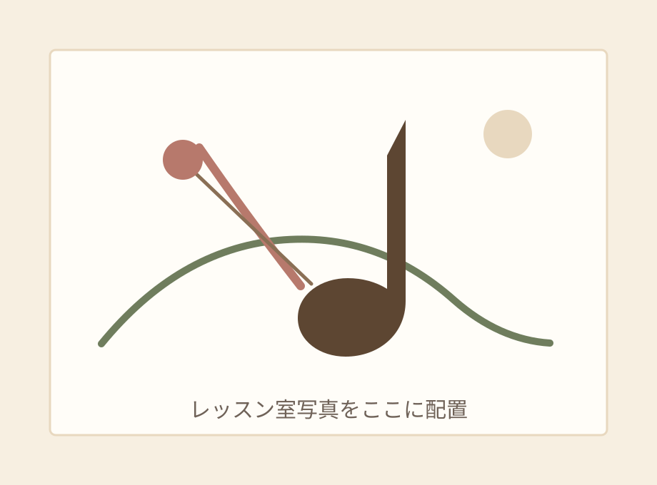
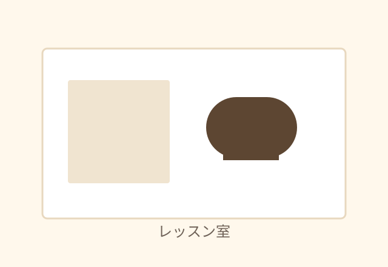
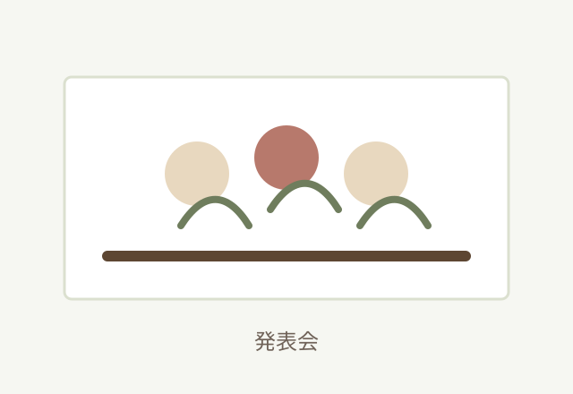
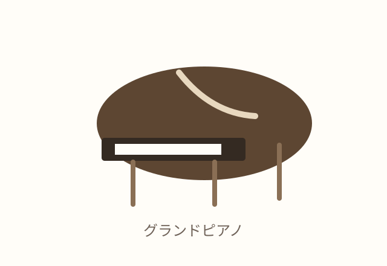
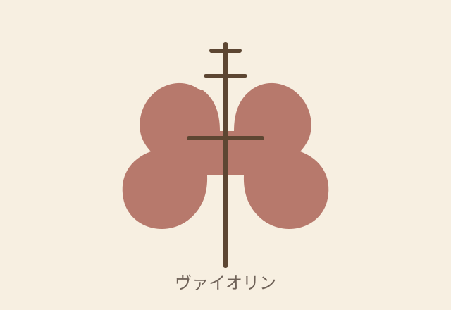

子どもからシニアまで
年齢や経験に合わせて、無理なく続けられるレッスンを行います。小さなお子さまは個人差を見ながらご相談ください。
西永福・秋津・調布応相談
お子さまから大人・シニアの方まで、基礎から丁寧に学べるヴァイオリン教室
趣味で始めたい方、初めて楽器に触れる方、もう一度学び直したい方まで、一人ひとりのペースに合わせて個人レッスンを行います。

About
柴ヴァイオリン教室では、趣味の方から初心者、経験者まで、それぞれの目的に合わせた個人レッスンを大切にしています。
初めての方には、ヴァイオリンの持ち方、楽譜の読み方、聴音、ソルフェージュなどを、個人の能力や年齢に合わせて基礎から丁寧に指導します。大人の初心者の方も歓迎しています。
楽しい雰囲気の中で音楽に親しみながら、ヴァイオリンとクラシック音楽を学ぶことで、集中力や表現力、バランスのとれた考え方を育てていきます。
Features
年齢や経験に合わせて、無理なく続けられるレッスンを行います。小さなお子さまは個人差を見ながらご相談ください。
持ち方、音の出し方、楽譜の読み方から丁寧に進めます。親子ともに未経験でも心配ありません。
趣味、学び直し、経験者の継続など、目標に合わせて内容や進度を調整します。
メインの西永福教室は、一軒家の1階にある広めのレッスン室です。グランドピアノを備えています。
聴音やソルフェージュも取り入れ、音楽を深く理解しながら演奏につなげます。
音高・音大受験指導にも対応してきました。現在の受け入れ状況はお問い合わせください。
Instructors
旧ホームページで紹介されていた講師情報をもとに、指導歴と専門性が伝わるようカード形式で掲載しています。
代表講師
日本弦楽指導者協会関東支部理事長。武蔵野音楽大学附属高等学校講師、武蔵野音楽大学附属音楽教室講師として、長年にわたり後進の指導に携わっています。
ヴァイオリン講師
武蔵野音楽大学ヴァイオリン専攻卒業。基礎を大切にしながら、一人ひとりの年齢や経験、目的に合わせて丁寧にレッスンを進めます。
Lessons
柴ヴァイオリン教室では、個人レッスンで指導を行っています。初心者の方には基礎を大切に、経験者の方には現在の課題に合わせて進めます。
体験レッスンや見学は随時ご相談いただけます。レッスンの雰囲気、通いやすい曜日や時間帯、楽器の準備についてもお問い合わせください。
旧ホームページでは、希望者向けの合奏や年1回の発表会が紹介されていました。現在の実施状況はお問い合わせ時にご確認ください。
Locations
住所の詳細は、安全面に配慮してお問い合わせ時にご案内します。
メイン教室
京王井の頭線 西永福駅周辺。駅から通いやすい、一軒家の1階にある広めのレッスン室です。
グランドピアノのある落ち着いた空間で、基礎から丁寧にレッスンします。
JR新秋津駅周辺。詳細な場所やレッスン可能な曜日・時間帯はお問い合わせください。
自宅教室のため、曜日・時間帯により応相談です。ご希望の方はメールでご相談ください。
Gallery
現在は仮画像です。実際の写真が用意できたら、同じファイル名またはHTML内の画像パスを変更して差し替えできます。




Video
講師演奏や発表会の様子を掲載予定です。YouTube動画を公開する場合は、ここに埋め込みコードを追加できます。
動画を掲載予定
Contact
体験レッスン、見学、レッスン日時、教室の場所、楽器の準備について、メールでご相談ください。
メールアドレス：example@example.com